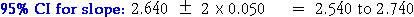
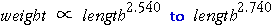

Confidence Interval for the Slope
The following extract from the Minitab output gives information needed to find a confidence interval for the slope of the regression line.
...
Predictor Coef Stdev t-ratio p
...
logLen 2.64043 0.05017 52.63 0.000
|
The 95% confidence interval is therefore

(Strictly, the constant '2' above should have been replaced by a value from t-tables with n - 2 = 97 degrees of freedom, 1.984, but there is little difference in the resulting interval.)
We are therefore 95% confident that slug weight is proportional to a power of length between

Another interpretation of the confidence interval is that the effect of doubling slug length is to increase weight by a factor of between 22.54 = 5.8 and 22.74 = 6.7.